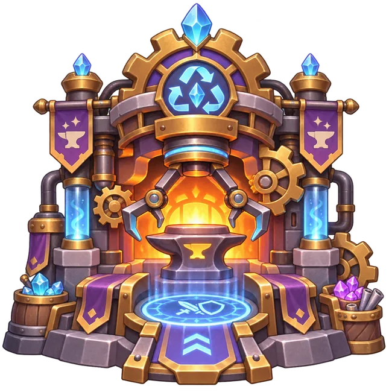
분해 장치
대장장이 근처에서 미착용·미잠금 장비를 분해합니다.


대장장이 근처에서 미착용·미잠금 장비를 분해합니다.
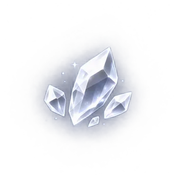
해당 등급 장비 분해로 획득
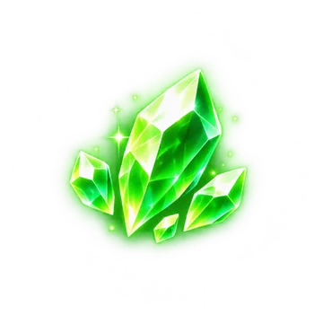
해당 등급 장비 분해로 획득
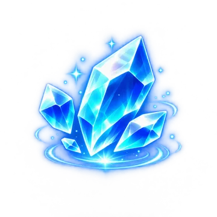
해당 등급 장비 분해로 획득
해당 등급 장비 분해로 획득
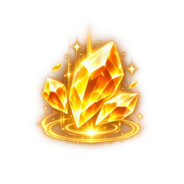
해당 등급 장비 분해로 획득
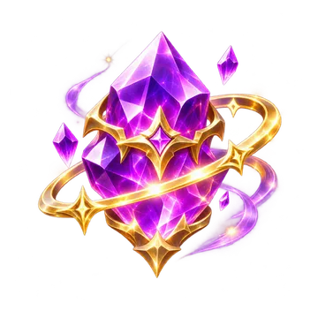
유니크 분해로 1개
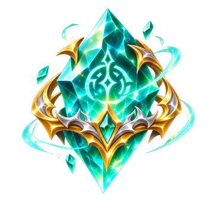
세트 분해로 1개
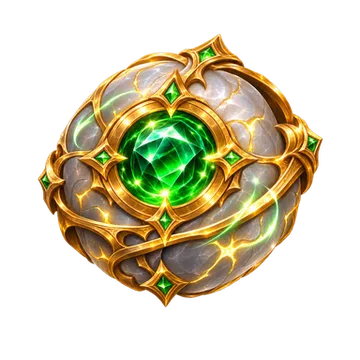
던전 입장 및 보호석 제작 재료
| 장비 종류 | 등급 결정 | 추가 정수 |
|---|---|---|
| 일반 계열 | 1 + ⌊강화/3⌋ | 없음 |
| 유니크 | 2 + ⌊강화/3⌋ | 유니크 정수 1 |
| 세트 | 2 + ⌊강화/3⌋ | 세트 정수 1 |
강화 장비는 누적 강화 비용의 30%를 골드로 돌려받습니다. 분해된 장비는 사라집니다.
해당 던전 난이도를 먼저 클리어하면 세트 교환 가능.
응축된 마력핵 5개 → 보호석 1개
| 던전 | 일반 | 어려움 | 악몽 | 지옥 |
|---|---|---|---|---|
| 왕슬라임 유적 | 8 / 4 | 14 / 7 | 22 / 11 | 34 / 16 |
| 달그늘 포자굴 | 10 / 5 | 18 / 9 | 28 / 14 | 43 / 20 |
| 고대 수호성채 | 13 / 6 | 22 / 11 | 35 / 17 | 54 / 25 |
| 천둥 수정전당 | 16 / 7 | 28 / 13 | 44 / 20 | 68 / 29 |
| 잿불 용광로 | 19 / 8 | 33 / 15 | 52 / 23 | 80 / 34 |
표: 기본 부위의 등급 결정 / 정수 요구량. 지팡이는 각각 1.2배, 장신구는 1.1배를 올림합니다. 제작·교환에는 해당 난이도 클리어 조건이 있습니다.
실제 게임 이미지 기반. 일부 장비는 정확한 표시명 매핑이 확인되지 않아 원본 리소스 이름으로 표시합니다.
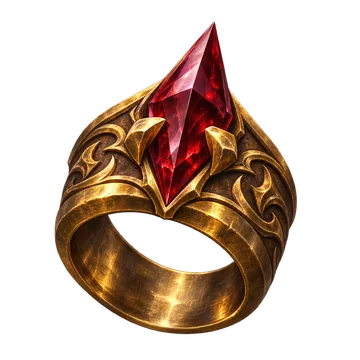
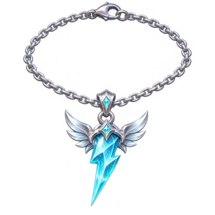
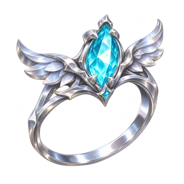
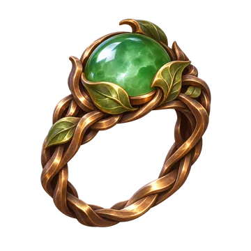
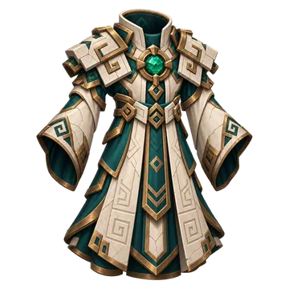
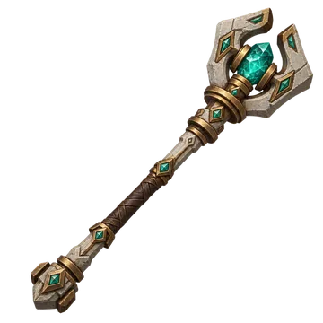
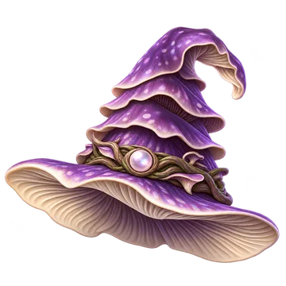
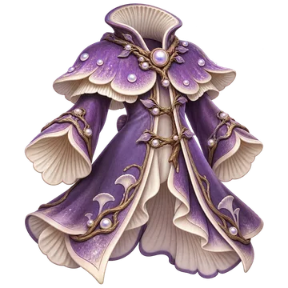
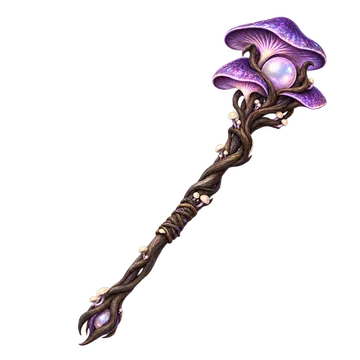
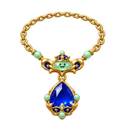
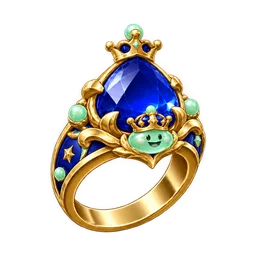
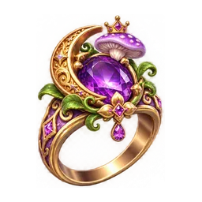
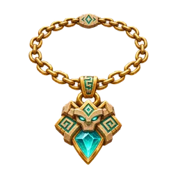
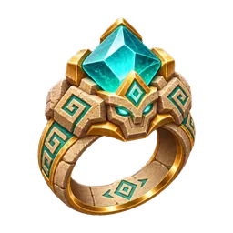
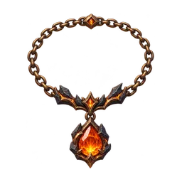
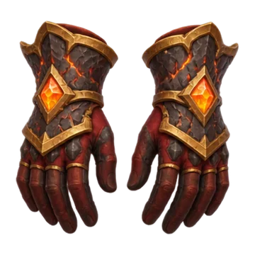
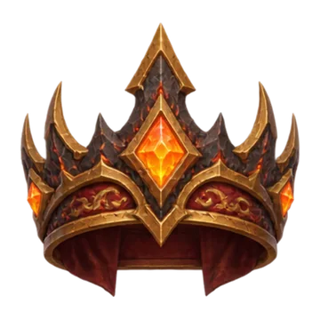
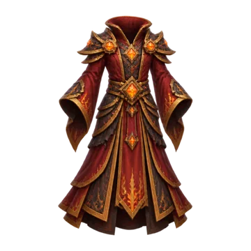
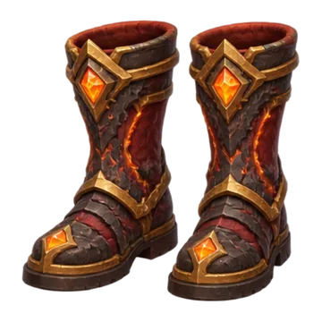
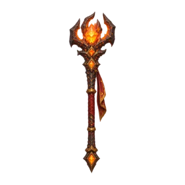
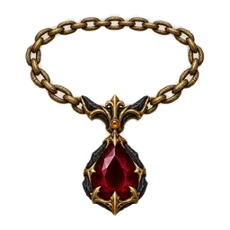
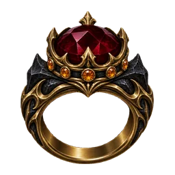
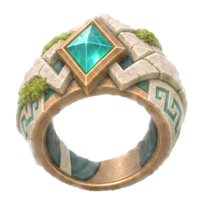
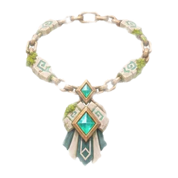
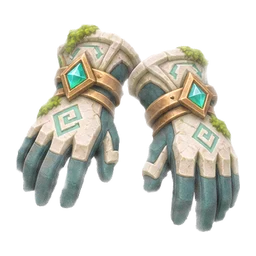


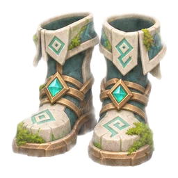
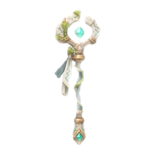

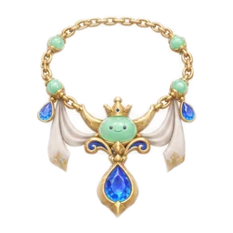
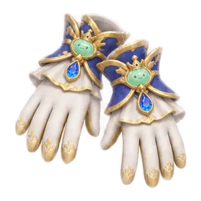


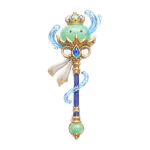
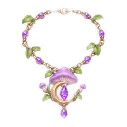
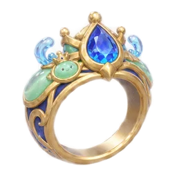


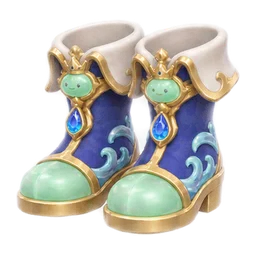

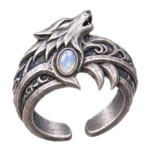
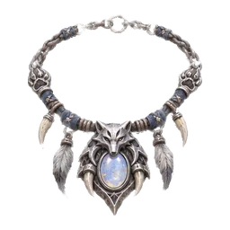
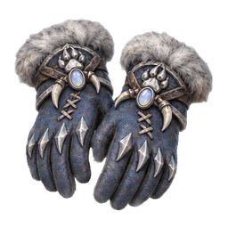
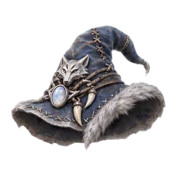
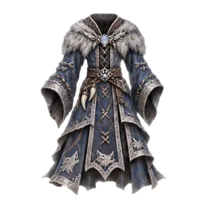
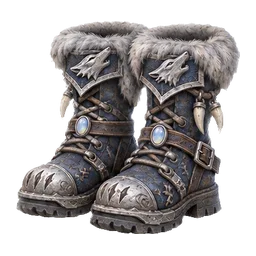
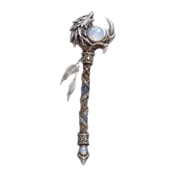
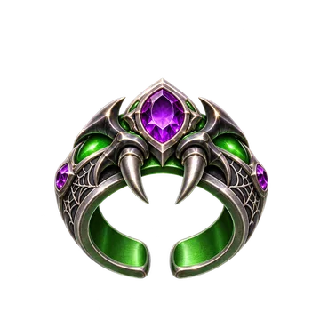
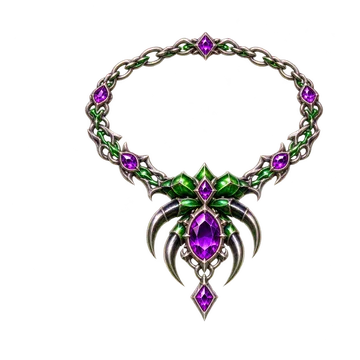